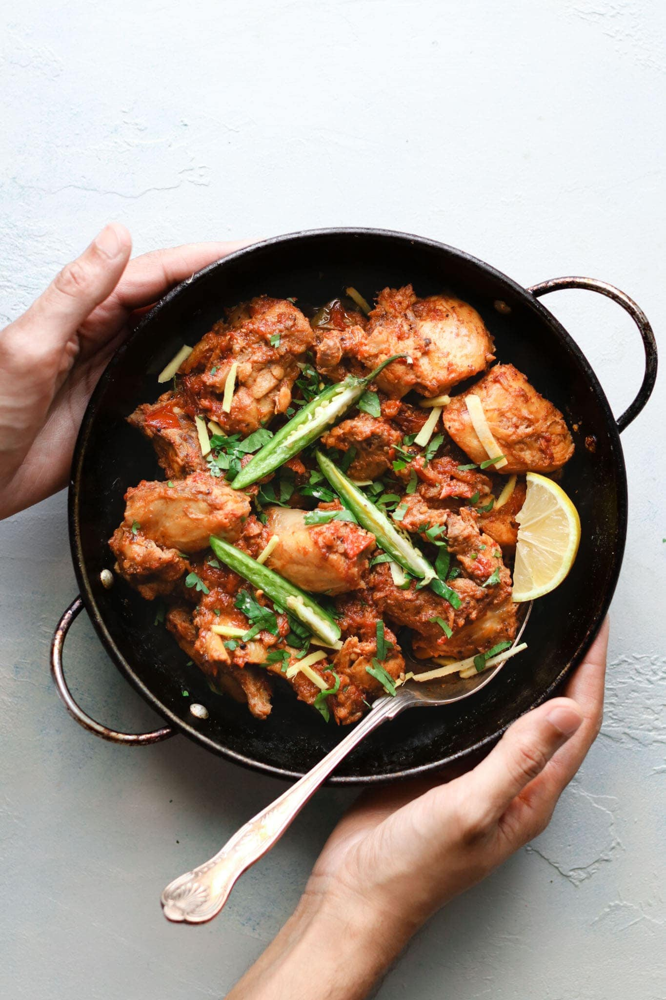

Chicken Karahi

Description
In the context of the curry, a Chicken Karahi is a tomato and ginger based,
thick masala curry which is though to originate from the Khyber Pakhtunkhwa region.
The original, authentic method of making it is a very specific one. As a general rule, Karahis are made from a base of ginger, garlic and tomatoes and also contain fresh green chillis, julienne-cut raw ginger and coriander.
It’s a rather thick, jammy gravy and concentrated in flavour – yum!
Ingredients
- Meat
- Fresh Ginger
- Fresh Garlic
- Fresh Tomatoes
- resh Green Chilli + Coriander
- Spices
Steps
- We start by frying the chicken in a generous amount of oil.
- We than add in a LOT of minced ginger and garlic.
- We then go ahead and add all our tomatoes and spices.
- We allow this mix to cook on high, stirring as needed to make sure it doesn’t catch at the bottom of the pan.
- At about the 15-20 minute mark, the gravy will have thickened nicely, the oil will be separating around the edges, the chicken will be cooked and things will be looking almost done. At this point, you can add the chopped coriander and chillis, turn the heat to low and allow everything to simmer together again without the lid. It can simmer for 5 minutes at this point
- Now you can garnish with your slices of ginger and serve as you please